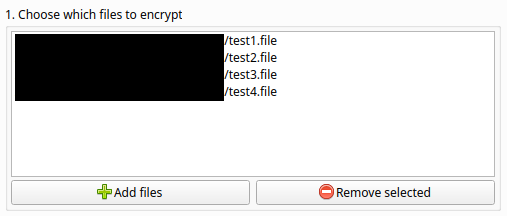
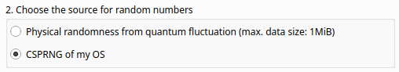
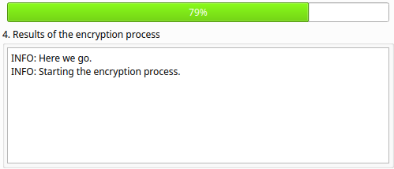
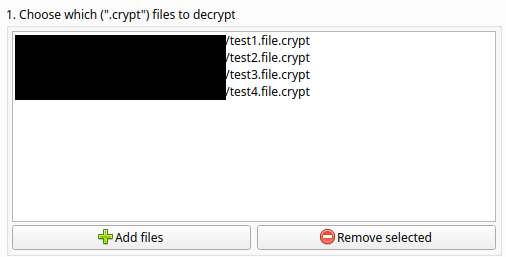
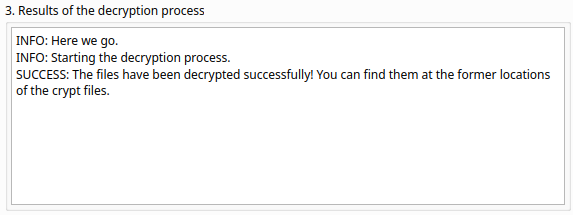

Lokkat is a software for file encryption and decryption. The algorithm being used is the so called "One-time pad". Using this algorithm is one of the only few ways to achieve perfect secrecy. Lokkat is free software.
Lokkat mainly has two modes of operation: encryption and decryption.
The tab "Encryption" in the user interface contains four numbered steps. The first of these steps is choosing which files to encrypt.
These files are being displayed in a list view. There are two buttons below the list view to add files or remove them again.

After adding all the files that are to be encrypted, you have to choose a source for randomness. Random data is needed for this type of encryption.

There are two options:
Physical randomness from quantum fluctuation: this option causes the algorithm to use randomness from the server of the Australian National University. The ANU is utilizing quantum fluctuation in a vacuum to retrieve randomness. Random data from physical sources is needed to achieve perfect secrecy but retrieving it in adequate amounts on computers without specialized hardware proves difficult. Therefore we use the services of the ANU. The maximum amount of data to be encrypted in this fashion is 1 Mibibyte (1024 * 1024 byte). We use this limit, because the ANU is providing its services free of charge and we do not want to exploit their generosity.
CSPRNG of my OS: this option utilizes the cryptographically sercure pseudo-random number generator of your OS. Depending on your OS and its settings this results in more or less secure random numbers.
Note: Later on in chapter [How safe is Lokkat?] you can read more about the the security and encryption
The encryption process can be started by clicking the button. The button will vanish and be replaced by a progress bar indicating the progress of the encryption operation. After the operation is completed the button reappears.

Below the button to start the encryption is a text area for output messages. Here you can see messages about the progress of the encryption and if it was successful or if any problems occured.
There are three numbered steps on the tab "decryption" in the user interface. The first one is choosing which files to decrypt.
These files are being displayed in a list view. There are two buttons below the list to add files to it or to remove them again.

ATTENTION: For the files to be decrypted successfully the matching key files (file type .otp) have to be in the same directory as the crypted files. E.g. to decrypt a file secret.txt.crypt there has to be a matching key file secret.txt.otp in the same directory.
The decryption process is started by clicking the button. After it was clicked, the button is replaced by a progress bar indicating the progress of the decryption operation. After the operation is finished, the button reappears.

Below the button is a text area to show output messenges to inform you about the state of the decryption operation. These messenges inform you if the decryption was successful or if it failed.
The short answer is: pretty to very safe.
The long one would be: it depends on your usage and the environmental factors at play:
If you have verified your Lokkat download using the public key, you can be pretty sure that the file has not been tampered with before it got on your machine. That is good- it improves security.
If you downloaded the source code of Lokkat instead of a precompiled version, you can check the code for security flaws or backdoors, should you be able to read Python source code. Even if not, you can assume that somebody who can read it has done so and hopefully reported bugs or even better- already fixed them. You don't have this option with closed source applications. Therefore it is a good thing, that Lokkat is free software and you can check its source code- it improves security.
Because Lokkat is using the One-Time Pad encryption, attackers cannot break the encryption of files by throwing CPU time at the problem. Brute force attacks do not work on it. The keys are as long as the plain texts. No two parts of the plain text are being encrypted with the part of the key and no key is used twice. This is very good- it improves security a lot! But it also has a disadvantage: the encrypted file and its key are combined twice as large as the original file. This is the price for the advantage in security over other more common methods of encryption.
If you have encrypted your files using your system's CSPRNG it pretty much depends on you trusting your operating system or not. Windows and MacOS have known backdoors. Most linux distros probably not. In the end, it is a matter of trust. Let's look at a potential attack scenario:
You have encrypted your data using your systems CSPRNG
You have removed the key files safely from your system (more on that later) and keep them in a safe place out of reach for the attacker (a flash drive in locked away in safe only known to you, for example)
The attacker has gained access to the encrypted files (file type .crypt). What kind of information can they gather from them?
they know how large the files are
they probably know when files were changed for the last time
they probably know when the files were created
they might very well know which user created the files
they don't know what the files contain and trying to brute force the encryption is a waste of time.
they can assume which kind of random data was used to encrypt the files; should the files be larger than 1 MiB it means they were encrypted using random data from a CSPRNG
These are some possible ways for the attacker to get the data inside the encrypted files:
The attacker already had access to the system at the time of encryption- this means they already had access to the plain text files. There is no encryption to be broken in this case. This is very bad, obviously. You should use all known means to ensure your system is not compromised.
They attacker gains access to the system after the files have already been encrypted. But the key files were not "safely" deleted and are recoverable in part or even completely by using specialized software. This is also pretty bad. Read here how to avoid this risk.
Just like in the previous case the attacker has gained access to the encrypted files after the encryption process. But this time they cannot restore the key files. That is good! But should the system use a weak CSPRNG or if the state of the system at encryption time can be reconstructed they can restart the CSPRNG using the same parameters and reconstruct the keys that way.
Threatening or using force against persons in possession of the key.
Usually when files are being deleted, they are not really deleted. The OS rather "forgets" that there are files on those specific parts of the drive and marks these spaces as empty so that other files can be stored there. As long as no other files are being written to the same location on the drive the bits of the old files usually stay intact. Only repeated overwriting of these locations can prevent a reconstruction almost as reliably as physical drive destruction.
There are tools to delete files in this manner so you don't have to rely on the traces of these files to fade away over time by normal system usage. Lokkat currently does not have a built-in feature to protect you from this risk. A future version could contain the option to directly safe your key files to a flash drive so they would never have to be stored on a drive inside your computer at all and therefore leave no traces.
But what about "true" randomness? After all we know that the one-time pad encryption allows perfect secrecy when combined with randomness that is just "random" enough. And what would be a better source for randomness that physical phenomena that escape our comprehension of predictability and are highly likely to behave completely chaotic?
Good question. Probably nothing. Should we be living in a deterministic universe, of course there would not be such a thing as random chance. But that does not seem to be the case.
Without the proper equipment to gather randomness from physical processes like radioactive decay, atmospheric white noise or quantum fluctuation in a vacuum though it is hard for the average computer user to get large amounts of "true" random data. Therefore we use the services of the Australian National University.
The Australian National University offers random data from one of its experiments on its website https://qrng.anu.edu.au/. The service is provided free of charge, looks very promising but also comes with its own set of risks.
This source of random data could be a fake. In that case the provider would know all sent random data (as well as probably the enquirer's IP adress) and it would probably save it all in a big database to have it at hand for judgement day. Highle unlikely, but not completely impossible.
The safe communication to the ANU could be compromised. Somebody could pretend to be the ANU or log all communication. The communication to the ANU's webservice is protected via TLS (however only by TLS 1.0). That is not optimal, because TLS 1.0 is considered by many to be not safe enough anymore. Because TLS is encryption that relies on a private key being sufficiently hard to guess encryption secured by TLS is of course not safe forever. Should someone log the encrypted traffic between you and the ANU (like an ISP, or some agency) they will be able to decrypt that traffic in the future. The quesion is: "when?".
For many use cases for TLS like safe communication when using online banking this is fine. But for our use case of one-time pad cryptography, an encryption method which will have most users cracking nuts using sledgehammers, there is the possibility that you really and most positively want to enrypt Data to be safe for ever as long as the keys are stored safely.
As you can see, most of the time possible insecurity is increased by outside factors like your OS, its CSPRNG, "insecure" file deletion and last but not least: the users themselves. Although that is definitely not good, it's still good to know because most of theses risks can be avoided to increase the effective secrecy.
Currently though, Lokkat can not fullfil the aforementionend promise of "perfect secrecy for all eternity", (yet). Even when all outside risks are minimized, Lokkat's current best source for true random data is the ANU. And TLS can and will be broken. Should your communication with the ANU be logged by some outside party then your secrets will be revealed... one day.
But there is hope. A future version could have the possibility to use "true" randomness from your own sources, like available sensors. Combined with all other measures this would be the last puzzle piece to achieve the PERFECT secrecy which is made possible by using one-time pad encryption.
Therefore- to stick to the truth- it has to be said that Lokkat cannot provide perfect secrecy yet. But we are damn close- closer than most of the usual encryption algorithms and tools out there anyway. That has its price but in many use cases it can still be the best and safest solution.